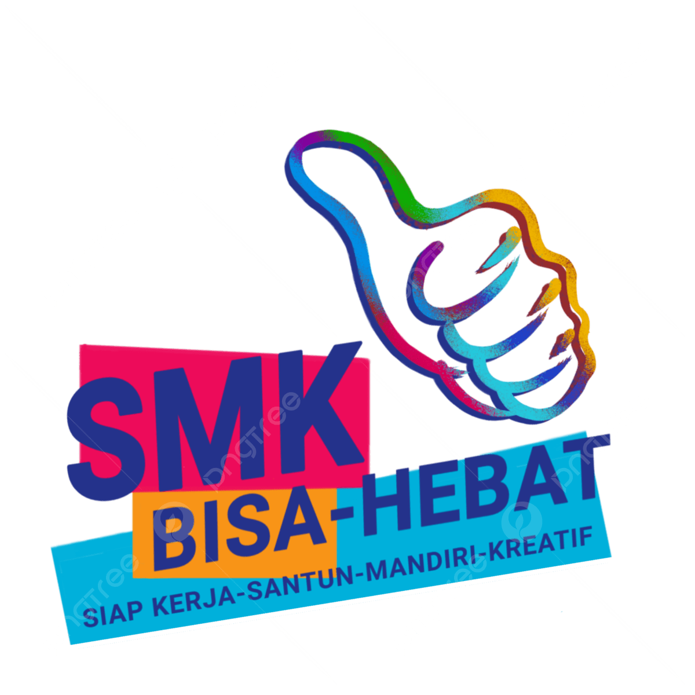
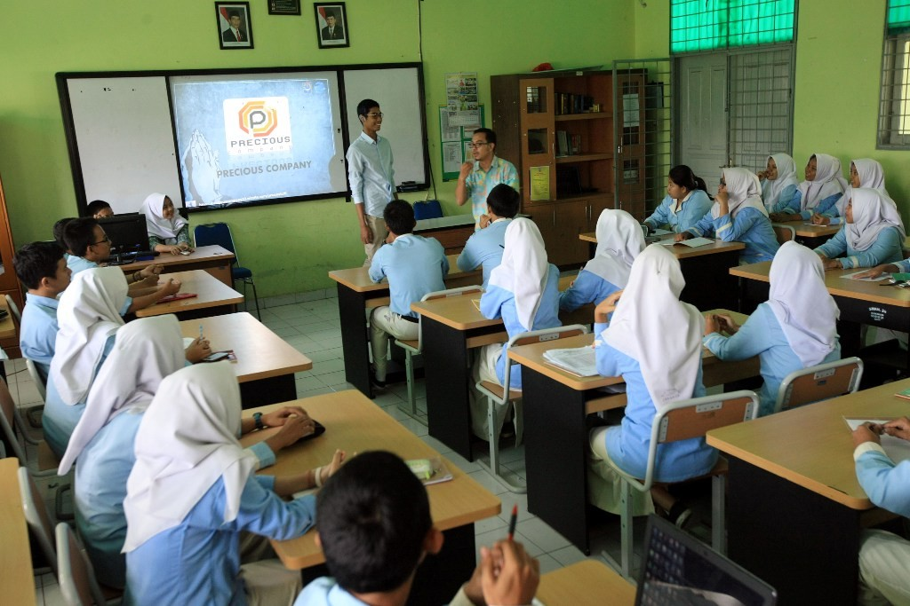

About SMK Kreatif

Melalui sistem ini, pengguna seperti guru, siswa, dan pihak manajemen sekolah dapat dengan mudah memantau dan memperbarui data sekolah secara real-time. Dengan navigasi yang sederhana dan tampilan yang informatif, dashboard ini tidak hanya membantu transparansi informasi, tetapi juga mendukung upaya digitalisasi pendidikan di lingkungan sekolah.
Diharapkan dengan hadirnya dashboard ini, seluruh civitas akademika dapat bekerja sama menjaga kualitas data, mempromosikan pencapaian sekolah, dan menciptakan ekosistem pendidikan yang lebih modern, responsif, dan terstruktur. Silakan manfaatkan semua menu yang tersedia untuk eksplorasi lebih lanjut. Jika Anda adalah admin, Anda juga dapat menambahkan konten baru, memperbarui data lama, atau mengunggah dokumentasi terbaru seputar kegiatan sekolah.
Dashboard ini dirancang sebagai pusat informasi terintegrasi yang mendukung digitalisasi sistem manajemen sekolah. Melalui antarmuka yang intuitif dan ramah pengguna, dashboard ini memungkinkan seluruh stakeholder—termasuk guru, siswa, tenaga kependidikan, hingga pimpinan sekolah—untuk memantau perkembangan data secara real-time. Mulai dari informasi akademik, prestasi siswa, jadwal kegiatan, dokumentasi sekolah, hingga profil jurusan, semuanya disajikan secara sistematis dan mudah diakses.
Sistem ini juga mendukung efisiensi administrasi. Guru dapat mengunggah atau memperbarui informasi pembelajaran dan kegiatan kelas, sedangkan pihak manajemen dapat menyusun laporan perkembangan sekolah secara berkala. Bagi siswa, dashboard ini menjadi sumber informasi terpercaya yang dapat diakses kapan pun dibutuhkan, tanpa bergantung pada komunikasi manual.
Melalui fitur navigasi yang sederhana dan informatif, diharapkan setiap pengguna dapat menjelajahi berbagai menu seperti profil sekolah, visi misi, jurusan, prestasi, dan galeri dokumentasi. Bagi admin, tersedia fitur tambahan untuk mengedit konten, mengunggah data terbaru, serta memastikan informasi yang tersaji tetap akurat dan relevan.
Dengan adanya dashboard ini, SMK tidak hanya mengikuti arus digitalisasi, tetapi juga menunjukkan komitmen untuk menciptakan lingkungan belajar yang transparan, adaptif, dan selaras dengan kebutuhan zaman. Mari manfaatkan fitur yang tersedia untuk membangun ekosistem pendidikan yang lebih modern dan kolaboratif.
Visi & Misi
"Menjadi sekolah kejuruan unggulan yang kreatif, inovatif, dan berdaya saing global dalam bidang teknologi dan industri kreatif."
Apa Itu Jurusan di SMK?
Di SMK (Sekolah Menengah Kejuruan), jurusan adalah program keahlian yang menentukan spesialisasi siswa. Setiap jurusan difokuskan untuk mengembangkan keterampilan kerja, sehingga saat lulus siswa siap terjun ke dunia industri atau bahkan berwirausaha.
Teknik Komputer dan Jaringan (TKJ)
Cocok buat kamu yang suka bongkar pasang komputer, jaringan internet, dan sistem server.
Yang dipelajari:
Perakitan dan perawatan komputer
Instalasi jaringan LAN, WAN, WiFi
Sistem operasi (Linux, Windows, Server)
Routing, subnetting, dan pengamanan jaringan
Penggunaan Mikrotik dan Cisco
Remote access dan virtualisasi
Peluang kerja:
Network Administrator, IT Support, Server Engineer, System Administrator, teknisi komputer
Keunggulan:
TKJ mengajarkan siswa untuk menjadi tulang punggung infrastruktur IT.

Multimedia
Buat kamu yang suka desain, video, animasi, dan karya visual kreatif.
Yang dipelajari:
Desain grafis (Photoshop, Illustrator, CorelDRAW)
Video editing (Premiere Pro, After Effects)
Fotografi & videografi
Animasi 2D/3D
Audio editing & podcasting
Web design & media interaktif
Peluang kerja:
Desainer grafis, Editor video, Animator, Content Creator, YouTuber, Creative Agency
Keunggulan:
Multimedia membuka jalan ke dunia industri kreatif yang terus berkembang.
quotes of the day
“Pendidikan bukan hanya tentang lulus dan nilai, tapi tentang tumbuh, mencoba, dan menjadi versi terbaik dari dirimu.”
— SMK Kreatif| Nama Sekolah | : | SMK Kreatif Bogor |
| NPSN: | : | 1234567890 |
| Alamat: | : | Jl. Baru No.123, Gunung putri, Kota Bogor, Jawa Barat 16412 |
| Akreditasi: | : | A- |
| Luas Tanah: | : | Sekitar 5.000 m² |
| Fasilitas: | : | Laboratorium Komputer, Ruang Multimedia, Lapangan Basket, Kolam Renang |